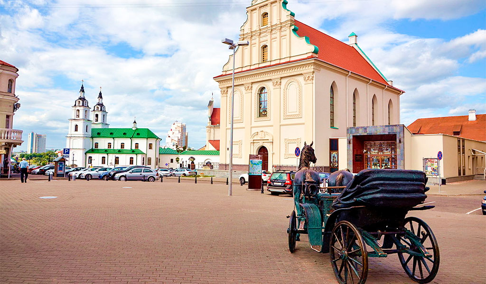

Столица Беларуси
Город-герой
Минск (белор. Мінск, тарашк. Менск) — столица и крупнейший город Беларуси, административный центр Минской области и Минского района, в состав которых не входит, поскольку является самостоятельной административно-территориальной единицей с особым (столичным) статусом. Крупнейший транспортный узел, политический, экономический, культурный и научный центр страны.
Достопримечательности
Верхний город – это центр белорусской столицы, где сохранились уникальные памятники архитектуры 16-18 веков. Первые поселения здесь появились еще в 12 веке. На территории Верхнего города находится костел Святого Иосифа и базилианский монастырь. Здесь же можно посетить Минский драматический театр и послушать интересный рассказ о белорусских усадьбах, посетив дом Ваньковичей.
Верхний город

©Рауба Арсений Владимирович